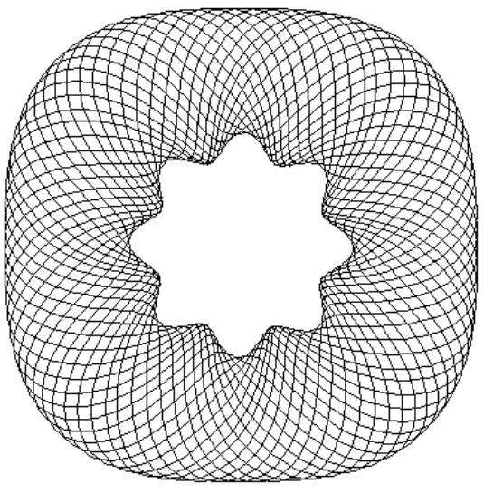

Playing Around With Guilloche Patterns
What about rosettes?

If you look carefully at this image, something different than what we've been doing so far is going on here. The lines do not appear to be those that would be traced by a pen on the outer edge of any wheel.
They appear to be simple sinusoids, but after mapping the x axis to some curved path, and dynamically scaling it to just touch some bounding envelope functions.